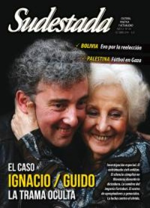

Buscar
De amor y de sangre
Detrás de la felicidad por la aparición del nieto de Estela de Carlotto, una densa trama recién comienza a develarse: la intrincada madeja de complicidades civiles, órdenes castrenses e indiferencia social. Olavarría fue el escenario de un mecanismo que integraba a la apropiación de los hijos de militantes desaparecidos como un eslabón más. Bajo la sombra de Loma Negra y del imperio Fortabat, hoy asoman como metáfora y recorte provinciano de una realidad perversa y nacional: la impunidad de los uniformados, la participación necesaria de profesionales médicos y periodistas, y el silencio cómodo de una población que eligió mirar para otro lado. En esta investigación especial, el caso Ignacio/Guido irrumpe como una oportunidad única para seguir batallando contra el olvido, desmontando una operatoria que, durante casi cuatro décadas, se sostiene aún en el silencio, el miedo y la sombra genocida.
Edición N° 133
Octubre 2014
Revista bimensual
Comprar edición impresaSumario
- De amor y de sangre
- Divino tesoro
- Alejandro
- Bolivia: una goleada en las urnas
- Narcotráfico, etapa superior del imperialismo
- Sweet home, Alabama
- "Cada canción me va marcando el camino"
- La radio ataca
- Mujeres de Kurdistán, poemas de alejandro haddad
- Reggaeton del wallmapu
- Silvio Frondizi
- Jugar en Palestina
- El robo del siglo
- "Me interesa un arte donde el espectador se conmueva"
Compartir Articulo
"Corazón de tiza, manda al cielo una señal que me indique el sitio donde está tu corazón"
Víctor Heredia
Cuando nació, por junio de 1978, Ignacio fue Guido y era imposible leer hacia dónde apuntarían los hilos de su vida. Nació en cualquier infierno. En La Cacha o en las maternidades concentracionarias que los genocidas armaban para arrebatarles sus hijos a las prisioneras y entregarlos a apropiadores que buscarían arrancarles de raíz cualquier atisbo de genética libertaria. Pero apenas pasaron días hasta que llegó a Olavarría. Pequeño, frágil, una chispa de vida en medio del horror. La sutil esperanza que estallaría 37 años después, junto a la moral cementaria de la ciudad.
Cuando Guido nació y fue Guido por apenas cinco horas, sobre la piel estragada de su madre Laura, era junio. Cuatro meses antes Olavarría había asistido con la misma indiferencia al último secuestro: al contador público Jorge Toledo fueron a buscarlo a su estudio. Lo destruyeron física y psicológicamente. Y lo indujeron al suicidio en Caseros, cuatro años después.
Cuando Guido nació y se volvía Ignacio en manos extrañas, el penal de Sierra Chica recibía 511 presos políticos más y era -como sigue siéndolo hoy- una agencia acabada del infierno. Era el año con tres papas, un mundial de fútbol ganado con la sangre de los martirizados, la visita del Rey Juan Carlos y la Reina Sofía, el motín en Devoto y la masacre de 60 presos comunes; el inconcebible accidente y muerte de Jorge Cafrune, el despliegue faraónico de cemento por las venas de la ciudad por parte de Carlos Víctor Portarrieu, el intendente de la dictadura. Y la revelación de que el camionero olavarriense Ricardo Janush no había muerto naturalmente, sino por las dosis de talio (un raticida letal) que le agregaba su esposa al té. Esposa a la vez de otros dos hombres que también habían muerto con la desinteresada colaboración conyugal. La envenenadora cayó en desgracia en esos días. Y fue reciclada, 18 años después, con el rostro cautivador de Araceli González en el unitario televisivo Mujeres asesinas.
Guido habrá llegado a la ciudad, tal vez, en manos militares. O en las de emisarios fieles. En esos días, la suma del poder ya no estaba en manos del teniente coronel Ignacio Aníbal Verdura, a cuyos pies se había inclinado la cúspide social de una ciudad próspera, construida sobre un suelo prolífico del que brotaban la piedra y el trigo como de una ubre inagotable. En diciembre de 1977, el crudo militar de apellido hortense fue ascendido y transferido a la Comisión de Asesoramiento Legislativo (CAL), una suerte de parlamento dictatorial, desde la que se perpetraron 1783 leyes de facto. Entre ellas, la que abría las puertas a la cesantía de trabajadores públicos "por razones de seguridad" y las que suspendían el derecho a huelga y el estatuto del docente. Ahora las botas firmes que marcaban el paso de la ciudad eran las del teniente coronel Héctor Alberto González Cremer.
Ascensos
La sociedad olavarriense tiene un ADN obrero; su clase media nace del ascenso social de los trabajadores fabriles, con el cemento como objeto de florecimiento. La ciudad fue un imán migratorio en los años de capital del trabajo, y acaso la figura más potente y simbólica de ese ascenso social fue su intendente paradigmático. Helios Eseverri, el tambero de Sierra Chica, con apenas sexto grado en la escuela pública, autodidacta, lector voraz, que se convirtió en el intendente de la ciudad durante un cuarto de siglo. Y en el intérprete de la opinión pública conservadora, recelosa y resistente a los cambios: en 1996 su nombre saltó a los medios nacionales cuando prohibió el recital de Los Redondos. Y el Indio Solari ensayó la primera conferencia de prensa de su historia para explicar el bochorno.
También Jorge El Negrito Toledo era un paradigma de ese ascenso social coronado por el reparto del 50 y 50 propio del capitalismo benefactor del peronismo que le arrancó de cuajo cualquier intento de protagonismo a la izquierda argentina. Los que lo conocieron en el fragor universitario y quienes asistieron, en Caseros, a su caída en el ostracismo y la oscuridad, lo recuerdan orgulloso de ser "alguien de origen humilde que había llegado a un título universitario", en palabras de Hernán Invernizzi.
La Olavarría obrera se construyó sobre la base de la piedra y el cultivo. Los dos pilares que confluyen en la historia de Ignacio/Guido: su infancia en la estancia Los Aguilares y sus primeras letras en Cerro Sotuyo, una de las bases prehistóricas de la explotación minera en la ciudad apenas fundada.
Su génesis militar tampoco es poca cosa: el coronel Álvaro Barros fue el fundador y eligió el lugar a partir de la tierra negra feraz, sin saber aún que la verdadera riqueza estaba debajo de esa tierra.
Barros no responde, como tantos, a la mirada binaria de la historia escolar. Fue un denunciante de la corrupción durante el genocidio del desierto de Julio Argentino Roca y pagó las consecuencias. Propuso un sistema clientelar sobre los pueblos originarios y también participó de la matanza de 3.500 niños paraguayos durante la guerra de la Triple Alianza. Pero al final, el nombre de la ciudad que fundó fue el del Coronel José Valentín de Olavarría, que parece haber hecho más mérito que el pobre Barros para, incluso, tener el privilegio del monumento en la plaza central.
Ese vientre prolífico de granito, dolomita y caliza fue también la razón por la que en junio de 1881 la Legislatura provincial autorizaba al gobernador Dardo Rocha a invertir 100 mil pesos "en hacer los estudios y presupuestos para la construcción de una cárcel penitenciaria en uno de los parajes de la provincia más apropiados para la fabricación de adoquines". Nacía entonces, casi con la ciudad, la cárcel de Sierra Chica: penal de máxima seguridad, la cloaca del sistema (como la definen actualmente desde la Comisión por la Memoria), uno de los emblemas más potentes del encierro. La cárcel construida bajo el esquema del Panóptico de Bentham, pensado en el siglo xviii para permitir que el guardián observara a todos y cada uno de sus prisioneros. Lo que Michel Foucault llamaría el ojo del poder. La del célebre motín de 1996, cuando los Doce Apóstoles tomaron cautiva a una jueza, jugaron fútbol con la cabeza de un compañero y cenaron a otro en empanadas.
(La nota completa en Sudestada N° 133 - octubre de 2014)
Comentarios
Silvana Melo y Claudia Rafael
Articulos más vistos


LIBRERÍA SUDESTADA

Colección infantil

Distribuidora de Libros

Suscripción

Sudestada en URUGUAY

Otros articulos de esta edición
Mujeres de Kurdistán, poemas de alejandro haddad
Las mujeres-poesías, todas ellas juntas en un libro. Y ese libro, confeccionado palabra por palabra por el escritor y documentalista ...
El robo del siglo
1972. Ese año, dos combatientes del PRT-ERP se ganan la portada de los diarios por asestar el golpe perfecto: "expropian" ...
Silvio Frondizi
No fueron sólo pensadores, sino peregrinos de un camino posible y deseable hacia la revolución. En su recorrido se fueron ...
 Adelanto Ciudad blanca, crónica negra
Adelanto Ciudad blanca, crónica negra
Narcotráfico, etapa superior del imperialismo
Ciudad blanca, crónica negra es el nombre del nuevo libro de Carlos Del Frade. En un profuso trabajo de investigación, ...
 Jorge Villegas, dramaturgo
Jorge Villegas, dramaturgo
"Me interesa un arte donde el espectador se conmueva"
"Agustín Tosco es el hombre más importante de toda la historia de Córdoba", afirma el dramaturgo Jorge Villegas. Desde ese ...
Sweet home, Alabama
Septiembre de 1963. Una bomba del Klu Klux Klan estalla en una iglesia y mata a cuatro nenas. La comunidad ...